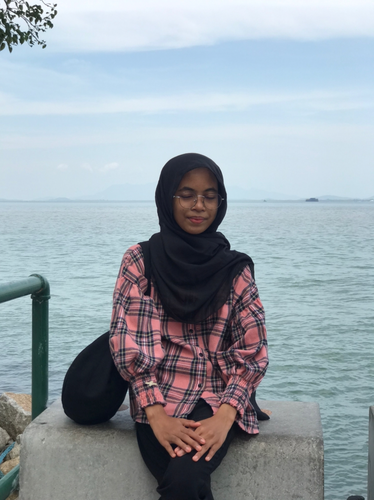

FATHER: YUSOF BIN AHMAD
This year dad is 47. He always puts family first.
My dad is willing to be hungry, as long as we are full.
My dad doesn't speak a lot, but I can feel the warmth of his love.
When I ask for something, even if it is difficult, he always tries his best.
Thank you so much, my one and only super dad.
MOTHER: NOORLIA BINTI KASSIM
This year my beautiful mother is 46, one year younger than my dad.
My mother is a very kind and gentle person.
My mother is also a multitasking person; she can cook, wash clothes, clean the house, and babble at the same time.
If I want to eat something, my mother will cook it without any excuse.

SISTER NAME: NUR AMANI SYIFA BINTI YUSOF
Although this year my sister is 16 years old, in my eyes she is still an adorable baby.
The two of us are so close that people around us feel weird and jealous.
My sister is my strength. She helps me solve many of my problems.
She is my moving mental and physical diary. I think about her almost every day.
Almost every day I miss my little sister who is beautiful, smart, diligent, loving, generous, and polite.
Syifa is my soul, love you sweetie.